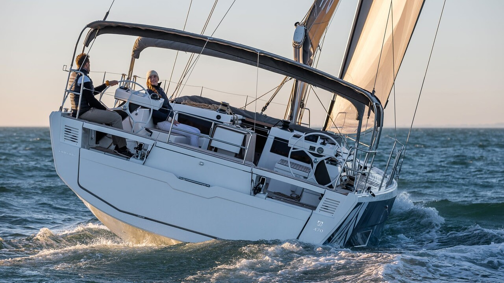
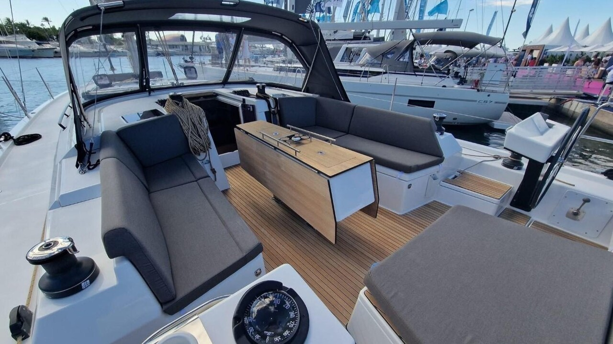
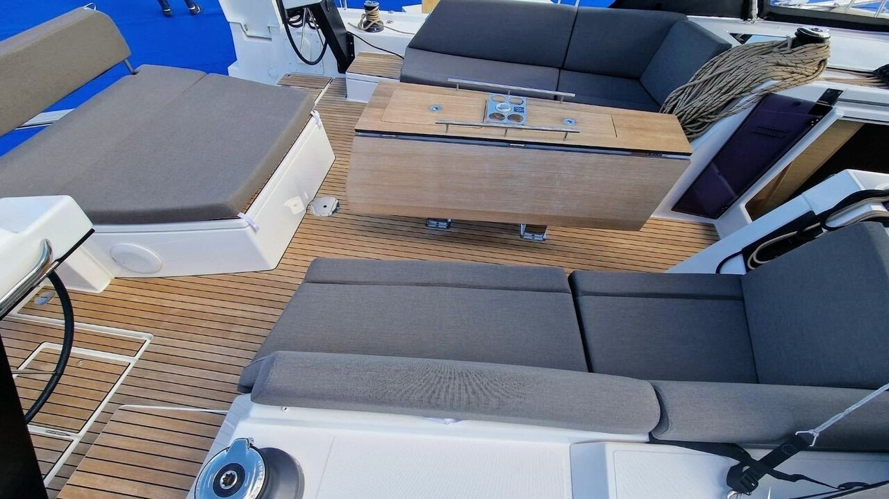
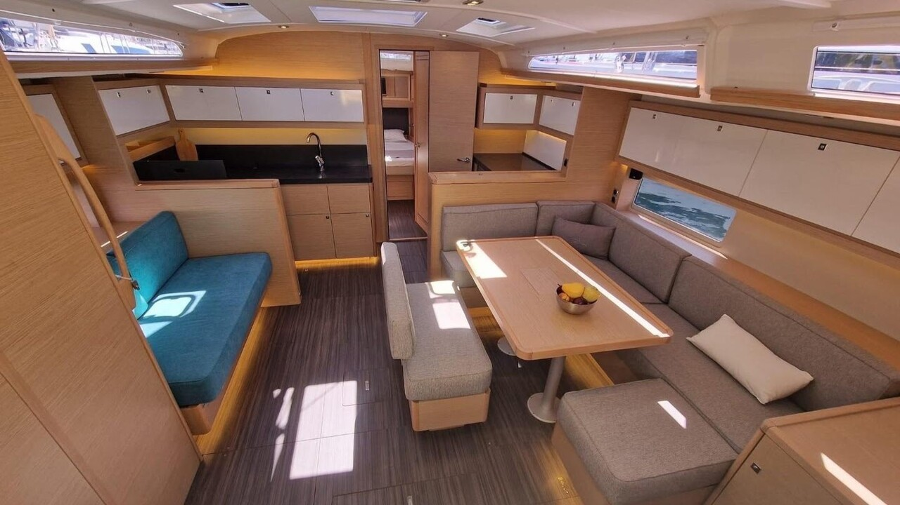
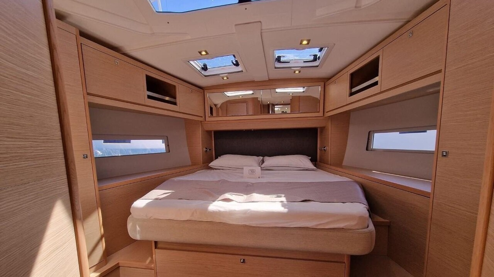

Честный тест-драйв Dufour 470: Французская кастомизация и безупречная остойчивость
Детальный разбор сильных и слабых сторон инновационного французского круизера. Взгляд инженера на три версии оснащения, остойчивость формы от Умберто Фельчи и реальные эксплуатационные риски.
⚓️ В двух словах: кто есть кто
Dufour 470 — это 47-футовая (14.85 м) парусная яхта, спроектированная итальянским архитектором Умберто Фельчи для знаменитой французской верфи, основанной Мишелем Дюфуром и теперь работающей под крылом Fountaine Pajot. Она появилась в 2021 году как наследница модели Dufour 460 Grand Large и на момент выхода в свет была одной из самых широких лодок в своём классе.
Если Beneteau стремится к балансу скорости и комфорта, а Bavaria делает ставку на вместительность и простоту, то Dufour предлагает третий, сугубо французский путь — это современный, стильный круизёр с широкими возможностями кастомизации. Модель выпускается в трёх различных версиях оснащения (Easy, Ocean, Performance) и предлагает на выбор от трёх до пяти вариантов планировки интерьера, что делает её гигантом как на частном, так и на чартерном рынках.
📊 Технические характеристики
📸 Фотохроника и интерьер





👍 Сильные стороны: за что мы ценим этот проект
Стабильность и комфорт на ходу: Лодка демонстрирует поразительную сопротивляемость крену за счёт широкого корпуса и двух скуловых рёбер (chined hull). Шквал здесь не заставит экстренно убирать паруса, требуя лишь тонкой настройки. Экипаж устаёт меньше, а переходы становятся комфортнее. Яхта настолько устойчива, что её «просто невозможно повалить на ухо». При 19 узлах ветра она уверенно держит 42 градуса к ветру, развивая скорость 8.9 узлов. Корпус мягко гасит волну.
Интерьер и жилое пространство (Уровень кастомизации): Dufour предлагает три варианта палубного такелажа: Easy (упрощённый чартерный вариант со стакселем-автоматом), Ocean (традиционный ручной вариант для частных владельцев с проводкой на комингсы) и Performance (спортивный лад с удлинённой мачтой и 6 лебёдками). Под одним корпусом уживаются и чартерная планировка на 5 кают для 12 человек, и роскошный 3-каютный вариант владельца с островным блоком.
Качество сборки и современные материалы: Качественная вакуумная инфузия корпуса и палубы из стеклопластика с пенным сердечником исключает появление осмоса благодаря винилэфирному слою. Прокладка систем и кабель-трасс находится на уровне выше среднего для серийных лодок. Отметим также фирменную фишку верфи — интегрированную уличную камбузную зону на транце с грилем и раковиной на свежем воздухе.
Эргономика кокпита и палубы: Умберто Фельчи разделил кокпит на просторную зону отдыха и рабочую зону рулевого. Переходы на боковые палубы снабжены удобными ступеньками. Сдвоенные штурвалы имеют идеальный диаметр и не стесняют движений экипажа, а кормовой транец легко превращается в огромный пляжный пляж с выходом к гаражу для тендера.
👎 Слабые стороны и болевые точки
- Ограничения мелководья: Стандартный киль уходит на 2.25 м, что сильно осложнит навигацию на мелководных акваториях Флориды, Багам или Чесапика. Для этих зон критически важно искать редкую версию с укороченным килем.
- Дефицит поручней: В угоду современному минимализму дизайнеры убрали продольные потолочные поручни в салоне. При сильном крене в штормовую погоду передвигаться внутри становится небезопасно — держаться не за что.
- Скользкая входная дверь: Вместо классических жестких закладных щитов установлена раздвижная стеклянная перегородка. В свежую погоду на встречной волне она способна подтекать и пропускать воду в салон.
- Вялость в базе: В стандартной версии Ocean со штатным парусным гардеробом в слабый ветер (до 10 узлов) 13-тонная яхта засыпает. По динамике в штилевых зонах она уступает Beneteau.
- Габариты и цена: Её огромная ширина (4.74 м) требует повышенной точности при маневрировании задним ходом в тесных старых маринах. Ценник лодки кусается на фоне массовых конкурентов.
💎 Вердикт
Dufour 470 — это великолепный и продуманный круизёр для тех, кто не готов выбирать между комфортом, стилем и управляемостью. Если вы ищете лодку, на которой можно комфортно и безопасно ходить всей семьёй, но при этом она не даст заскучать за штурвалом в свежий ветер — Dufour 470 станет отличным выбором. Она не такая резвая в слабый ветер, как Beneteau, и не такая бюджетная, как Bavaria, но превосходит их в гибкости настроек, качестве исполнения и общей элегантности.
PS: При осмотре конкретного борта б/у обязательно уточните версию (Easy / Ocean / Performance). Тщательно проверьте люфты в рулевой системе баллеров и состояние гидравлического привода транцевой платформы. Остальное лечится плановым ТО.